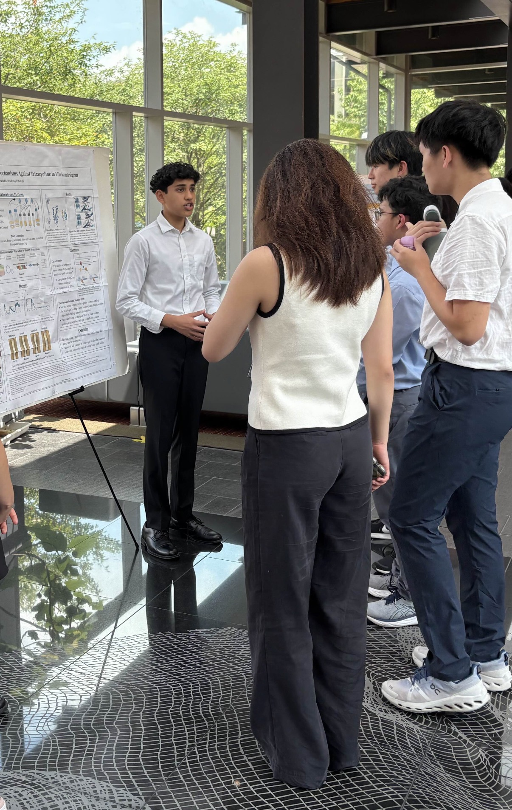

Dev Patel
The University of North Carolina at Chapel Hill

About Me
I never expected that learning about a chemical reaction would lead me to the astonishing concept of gene therapy.
“C₂H₅OH + 3 O₂ → 2 CO₂ + 3 H₂O. Ethanol decomposition is performed by enzymes within our bodies.”
As my AP Chemistry teacher explained this equation during our study of reaction rates, an ordinary day during sophomore year of high school suddenly became the beginning of my odyssey to answer a burning question: “Can the enzymes that break down ethanol be optimized to reduce the risk of developing alcoholism?” Since this inquiry could only be explored outside the classroom, I spent time on YouTube surfing through videos that introduced me to the specific enzymes involved in breaking down ethanol, and how these enzymes’ performance depends on the genes that encode them. As my question became legitimized by this knowledge, my eagerness to find its answer only grew. By conducting deeper research, I realized that finding this solution could benefit the millions suffering from alcoholism.
With my curiosity empowered, I digested complex research papers and articles, eventually finding my coveted answer: CRISPR-Cas9, a gene therapy that can treat hereditary diseases by precisely correcting pathogenic mutations within genes. I marveled at learning about such an innovative tool, which compelled me to write a literature review applying the mechanism as a possible solution to alcoholism.
Through this literature review, gene therapy ignited my eagerness to engage in the study of genomics beyond just theory. I seized an opportunity to fulfill this desire when I was selected to conduct bacterial genomics research at the Summer Science Program at Lehigh University. Immediately, I was exposed to the alarming trend of antibiotic resistance outpacing new drug discovery, which causes millions of deaths worldwide. To address this issue, I investigated how Vibrio natriegen bacteria develop resistance to the antibiotic tetracycline. By performing PCR, bacterial transformations, DNA extraction, and genome analysis, I identified specific mutations in certain genes that supported the predictability of certain mechanisms of resistance, particularly those involving the optimization of efflux pumps. This discovery, along with the genomics laboratory skills I acquired, proved to me that I can use my passion for genomics to help combat a global issue.
I now attend the University of North Carolina at Chapel Hill with a prospective major in Biomedical Engineering. Within my major, I intend to specialize in pharmacoengineering, where I can synthesize my interests in gene therapy and genomics by advancing my understanding of drug delivery. I plan on applying this understanding at one of the many labs at the Center of Molecular Medicine, where groundbreaking research is being done regarding the delivery mechanisms of gene therapy technologies, specifically AAV viral vectors. By contributing to this research, I will prepare myself for a career focusing on transforming gene therapy as an effective clinical treatment.

"The virtues of science are skepticism and independence of thought." – Walter Gilbert

I present my antibiotic resistance research in front of Lehigh University faculty and students at the Summer Science Program.